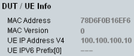
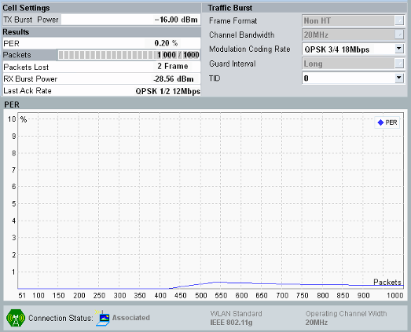

- "UE Info": informs about properties of the mobile WLAN device reported to the instrument, e.g. MAC address
- "PER": packet error rate measurement performed by the instrument
Wait until the mobile has completed association. Then retrieve the "UE Info": MAC address and MAC version.
Wait until FETCh:WLAN:SIGN:PSWitched:STATe? returns ASS
SENSe:WLAN:SIGN:UECapability:MAC:ADDRess?
SENSe:WLAN:SIGN:UECapability:MAC:VERSion?
Configure the packet error rate (PER) measurement over 1000 packets. Start the measurement. Retrieve the PER results including the "Current Number of Packets" (indicating the progress of the measurement). When the measurement has finished, the current number is identical to the specified number of packets.
CONFigure:WLAN:SIGN:PER:PACKets 1000
INITiate:WLAN:SIGN:PER
FETCh:WLAN:SIGN:PER?
Leave the remote control mode and return to manual operation using the command >L.
In manual mode, the results are displayed as shown below.

The PER results appear in the main view of the "WLAN PER" measurement.
